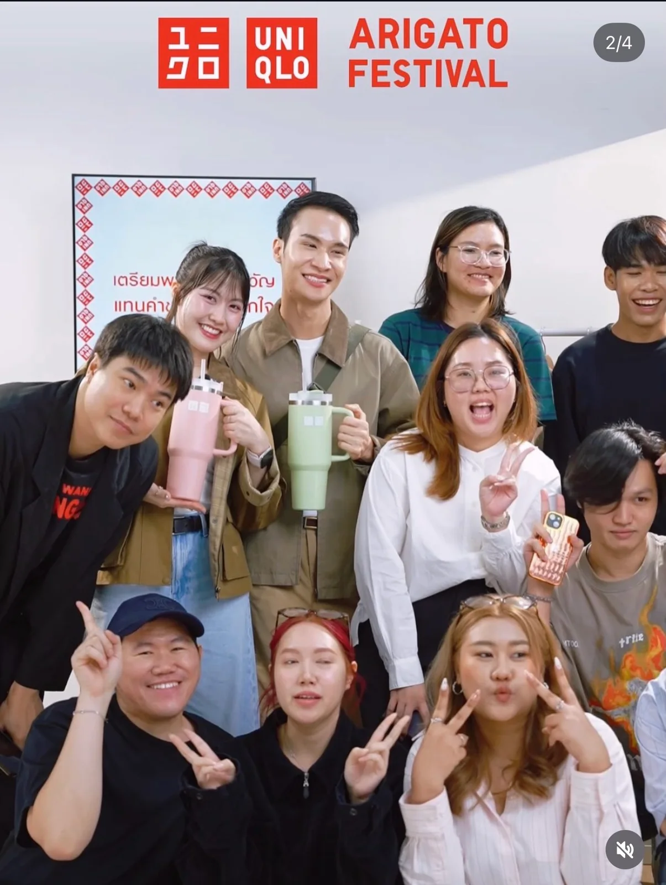

BRAND CAMPAIGNS / LIVE COMMERCE
UNIQLO Arigato Festival
Every team ready. Every live on brand.
Managed approximately 10 days of UNIQLO Arigato Festival with a team of 10–15 people, connecting brand requirements, production readiness and the audience experience.

01 / CONTEXT
A new live, every day.
Arigato Festival was an approximately 10-day livestream campaign with different products, scripts and presentation details each day. I coordinated a team of around 10–15 people, including producers, junior producers, hosts, garment stock staff, camera operators and script/creative teams.
02 / OBJECTIVE
Recognisably UNIQLO.
Translate the brand’s brief into an Arigato Festival experience aligned with UNIQLO’s global theme and brand identity, from concept and presentation to host character. The aim was to make the live recognisably UNIQLO while giving viewers room to ask questions, talk and participate.
03 / MY ROLE
Connect the brief to the teams.
As PM, I brought together each day’s details, sequenced work, assigned responsibilities and tracked the readiness of concepts, scripts, selling approaches and clothing. I coordinated the owners of each workstream, updated the team and proposed daily process improvements to bring the brand’s brief to life.
04 / THINKING / PROCESS
Make readiness a daily process.
The main challenges were preparing large quantities of clothing to match each day’s script, keeping hosts on brand and adapting equipment to different participants. I introduced daily checklists, arranged paid overtime for garment staff to start an hour earlier and limited preparation to two or three hours so other tasks could proceed. Hosts arrived at least an hour early for product, script, character and wording briefings. I then coordinated camera, lighting and microphone checks, including a live test with the actual participants before broadcast.
05 / EXECUTION
Bring store expertise into the live.
I took the brand’s activity brief and coordinated its delivery, bringing staff from different stores into the live. Activities included demonstrations of neat, quick and easy UNIQLO-style clothing folds and advice on colours and garment shapes for different skin tones and body types. These segments gave viewers opportunities to ask questions and join the conversation.
06 / RESULT / IMPACT
More ready. More present.
The revised process improved pre-live readiness. Rechecks helped reduce errors during the broadcast and made delivery smoother. Hosts better understood their character and presentation approach. With less time spent resolving issues, the team could focus on the live, follow comments and interact more with viewers.
Qualitative outcomes based on my experience on this campaign.
OTHER UNIQLO WORK / YEAR-END LIVE
Additional UNIQLO work: Year-End Live. This footage is from a separate campaign, not Arigato Festival.
ARIGATO FESTIVAL & OTHER UNIQLO WORK
LET’S MAKE IT HAPPEN
Your next project.
Let’s bring it to life.
Let’s discuss opportunities in Project Management, Ecommerce
and Campaign Execution